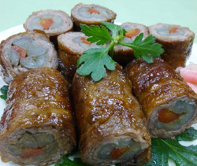

牛肉の八幡巻き風
- 調理時間：30 分
- （一人当たり）
- カロリー：329kcal
- たんぱく質：15.7g
- 脂質：9.0g
- 塩分：3.3g

＜２人分＞
- 牛肉薄切り
- 4枚（120g位）
- ごぼう
- 1本
- ニンジン
- 1/2本
Ａ
- ・だし汁
- 200cc
- ・砂糖
- 大さじ1
- ・醤油
- 大さじ1
- ・料理酒
- 大さじ1
- 小麦粉
- 大さじ1
- 植物油
- 少々
- ・砂糖
- 大さじ2
- ・醤油
- 大さじ2
- ・みりん
- 大さじ2
- 紅ショウガ
- 少々
Ｂ

- ゴボウは１２～１３ｃｍ長さに切り、それを縦４つ割りにする。ニンジンはゴボウの長さに合わせて切る。
- 鍋にＡを入れて火にかけ、ゴボウとニンジンを加えて下煮する。
- まな板に牛肉を２枚広げ、ゴボウ、ニンジンを芯にして巻き、巻き終わりは楊枝止める。
※ゴボウ５本にニンジン１本くらいの割合で。 - 牛肉の表面に小麦粉をまぶす。
- 熱したフライパンに植物油をいれ、牛肉の転がしながら焼き色がついたら、Ｂの合わせ調味料を入れ強火にして煮からめる。
- 焼きあがれば取り出し、３ｃｍ幅に切り、器にもりつけて紅ショウガを飾る。
牛肉の八幡巻き風
寒い季節の料理は温かさも大切なごちそうの要素になります。といっても温かいものばかりを一度にそろえるのは年末年始の酒宴では少し大変。温かい料理と、冷めてもおいしい濃い味に仕上げたものが酒の肴にあってもよいものです。汁けがなくなるまで煮絡めて濃い味に仕上げれば、常備菜にもなりますし、お弁当にもうってつけのお惣菜になります。
お節の一品としては初春にふさわしい小枝や小花を添えたりすると、ふだんの料理とは違った風格が備わります。